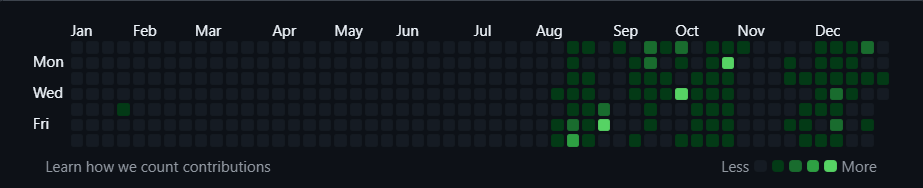

2025! starting at a blank VS Code screen one night, wondered if I'd ever turn HTML basics into real projects. Yes, I did it.
Despite experiencing many ups and downs this year, it was my most productive year, from learning the basics of HTML to designing the festival project. I learned a lot.
From basic HTML to npm init.
From live server to npm run dev.
From client-side to server-side.
From requesting a response to sending the response.
From forget password to safely hashing the password in DB.
From receiving emails to generating an email from my server.
And also, from 8.72 SGPA to 9.48 SGPA and counting.
I'm eager to learn more. I tried to build a project management system (backend) using Node, Express and MongoDB Atlas, with different API endpoints, such as login, register, health check, etc… and different user roles, task status, and still working (If anyone interested in writing frontend can join which help both of us).
And also working on a frontend project for a literature festival, gaining lot of experience while enhancing its design.
These things didn’t happen overnight. Worked a lot on it, and still working. I also revised my C++ knowledge, tried to learn Linux (but failed right at installation 😅). Apart from the fails, even the small thing mattered to me, such as a todo app, calculator or a simple animated website, which helped a lot.
I have not learnt all the things, that I was thinking. But I am happy with what I have learnt, and trying to improve my communication skills, which I don’t have.

As you can see from the above image, I have started late this year, but the start is important. There were some long breaks in between, but I tried to get back to the track with the same intent. This blog may be my last commit of the year.
Short blog, big year.
git commit -m "End of 2025"
git push origin 2026